Climb. Coffee. Community.
Al pati s'hi ve a escalar, però s'hi queda per la gent. Cafè a la barra, tertúlia al matalàs, disfresses quan toca i una colla que t'aplaudeix encara que caiguis.
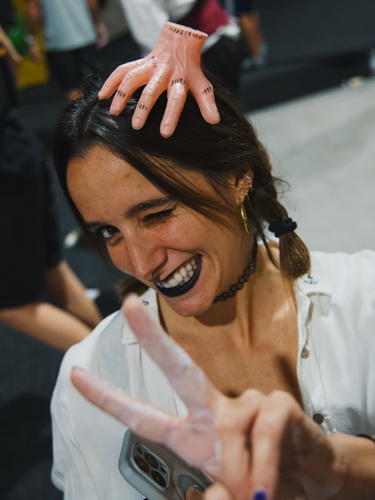
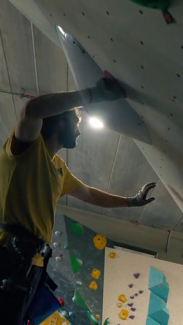
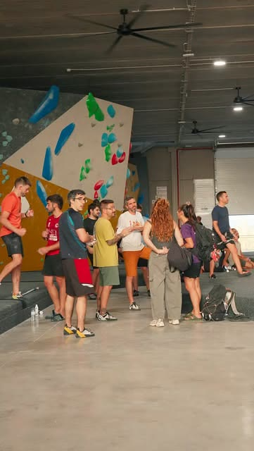
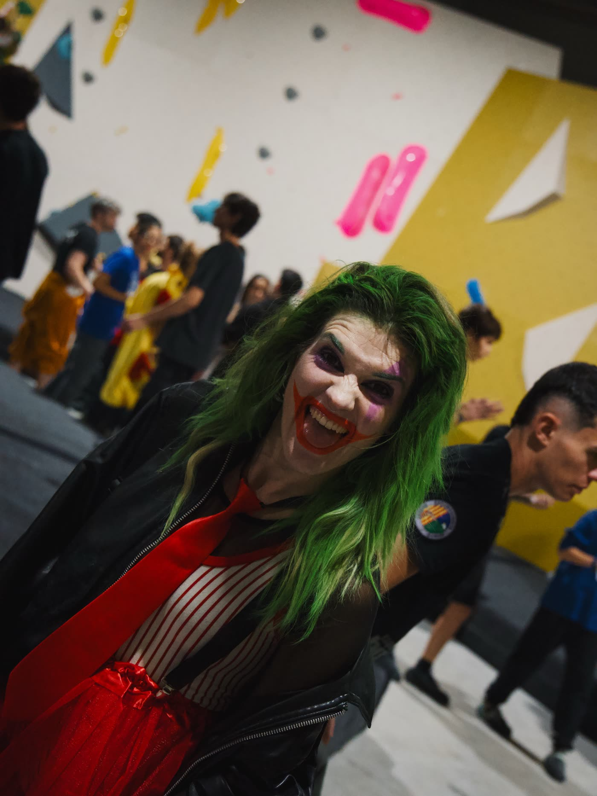
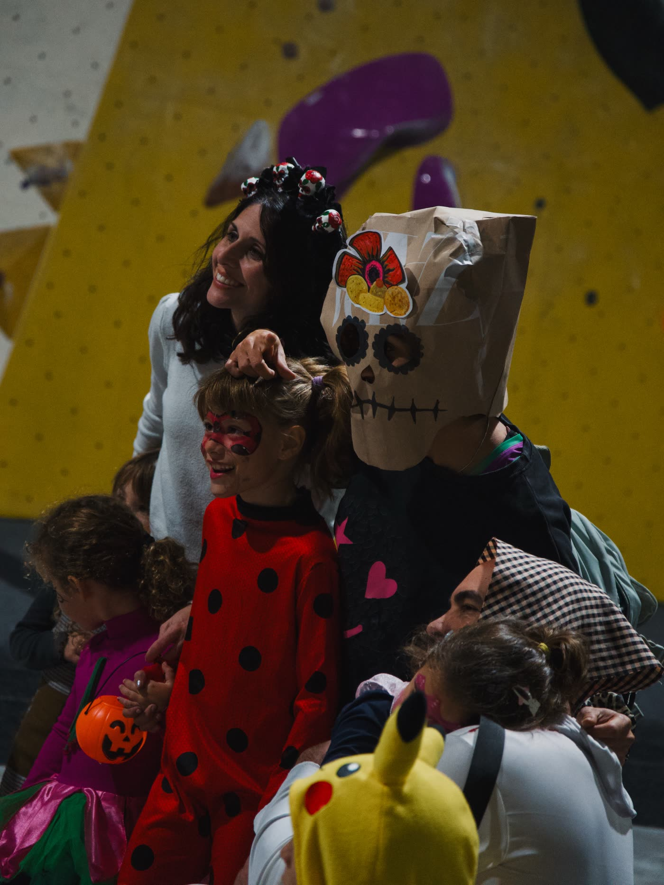
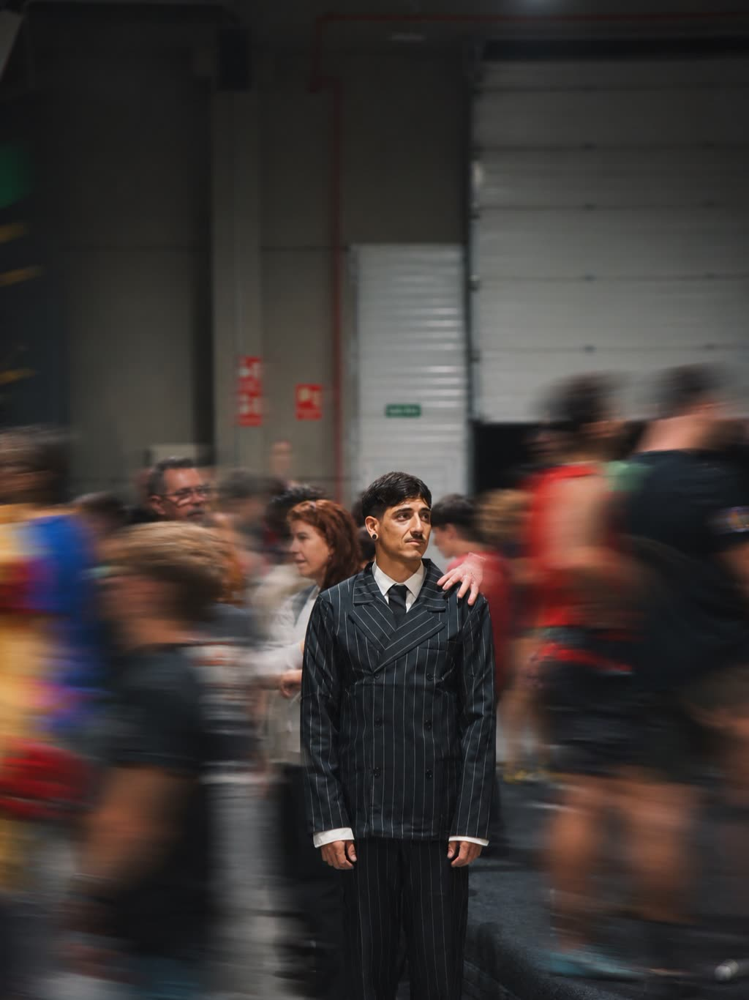
Obrim la porta.
Cafè calent, matalassos nets i la paret per a tu sol.
Blocs nous.
Els setters canvien preses i volums. Demà tindràs projecte nou.
Entreno de migdia.
Una hora a la zona d'entrenament i tornes a la feina amb els avantbraços inflats.
Surten de l'escola.
Motxilles al racó i extraescolars a la paret. Els més petits pugen sense por.
Arriba la colla.
Música, beta compartida i algú que t'anima des del matalàs.
L'últim intent.
Ara sí que surt. I si no, demà més.
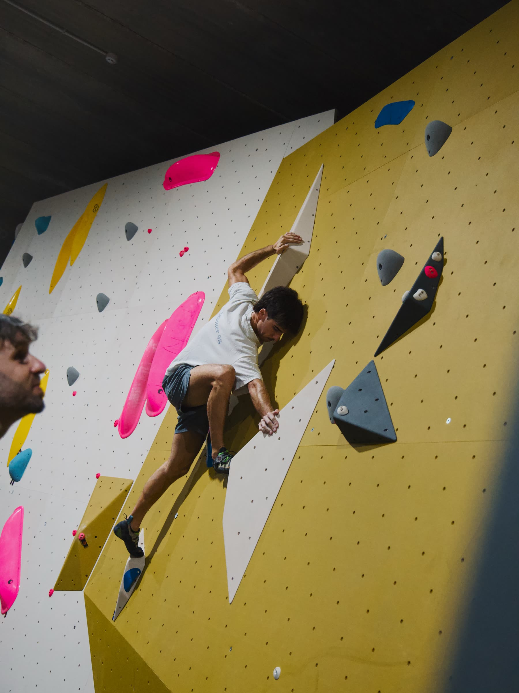

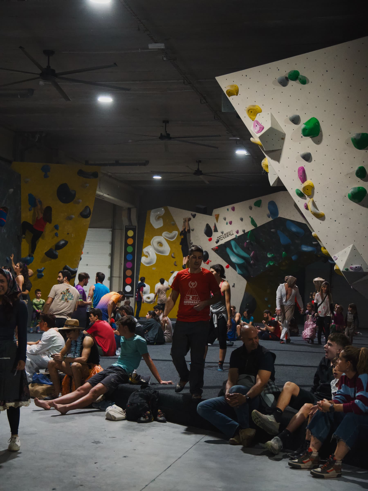
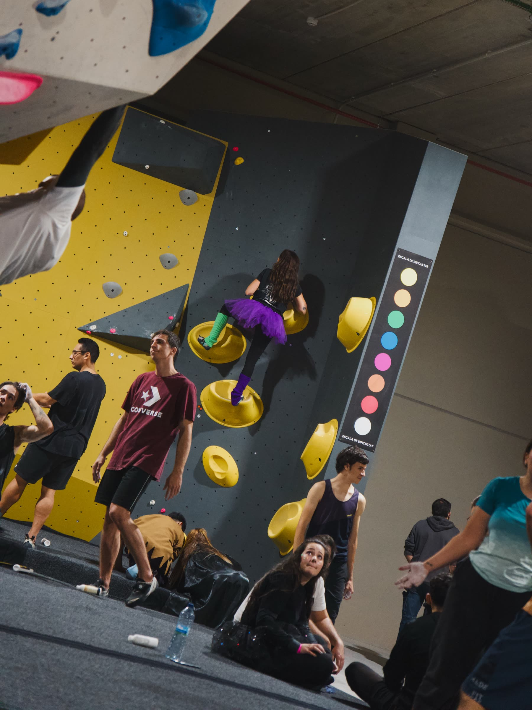
Parles
escalador?
Toca una targeta. Si ja te les saps totes, ets dels nostres.
La roca,
a tocar.
Entrenes al pati i, quan fa bo, surts a fora. Des del patiGran tens algunes de les millors escoles d'escalada a poca estona.
- MontserratConglomerat i agulles~30 min
- Sant Llorenç del MuntConglomerat i parets llargues~40 min
- OlianaCalcària desplomada~1 h 15
- TerradetsParets i vies llargues~1 h 45
- SiuranaCalcària mítica~1 h 50
- MargalefConglomerat ple de forats~2 h
Temps aproximats en cotxe des del patiGran.
La vida
al pati.
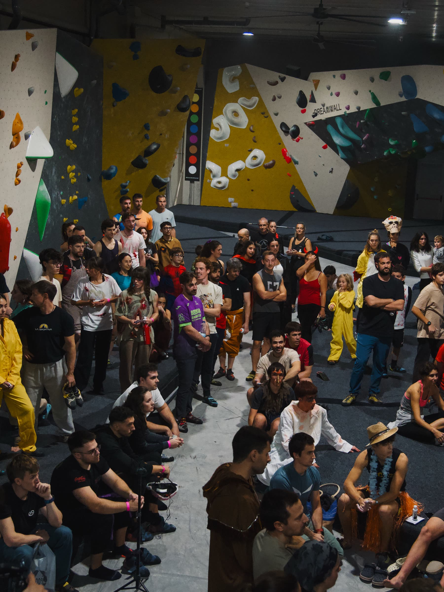
«Quin dia més èpic! Gràcies per ser-hi!» La inauguració, en fotos d'@atempo_films.
Què és el setting? Equipar i muntar línies, amb @lluri_, @jaredcstllo i @emilianoramos_climb.
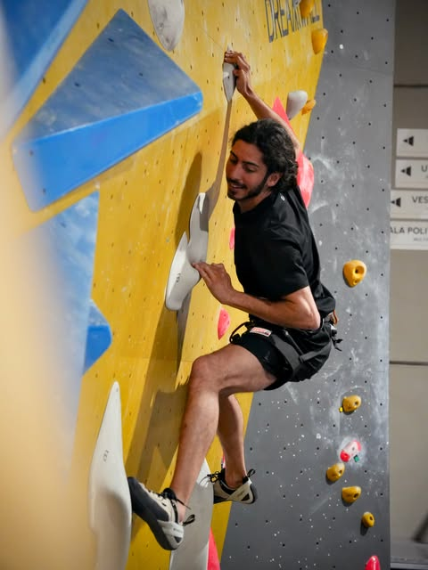
A l'agost també s'escala. Ets més de platja o de muntanya?
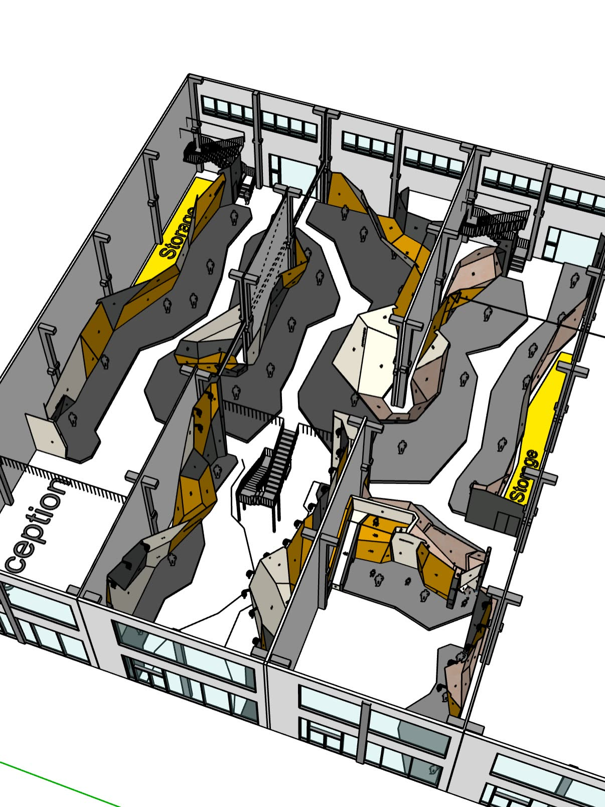
La Sagrada Família versió estesa. TRUST!
Sense tu, no som ningú. Només som parets.
Hallow, castanyada i inauguració: disfressa't i entra gratis.
vine aescalar.
Primer cop? Omple el registre en línia abans de venir i, au, a escalar.
935 480 718info@elpativertical.cat